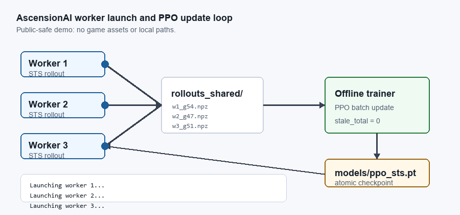

Results Dashboard
Static viewer for fixed-seed comparisons, PPO metrics, BC validation curves, and local CSV uploads.
Open dashboardAscensionAI is a from-scratch RL/search system for Ironclad on a headless C++ simulator. Its search now plays honestly — it samples what a player can't see instead of reading the seed — and the current best honest agent wins 5 / 150 fixed seeds (floor 24.4). Every change is A/B-tested on the same 150 seeds.
November 2026: an audit found that every earlier search result — including mainline_v3's 9 wins and the draft teacher's 44 — came from search that replayed the true seed, so its rollouts knew the real draw order, enemy rolls and future rewards. Those numbers are now labelled clairvoyant (seed-peeking). The search was rebuilt to sample hidden information instead of reading it (exact C++ state copies + determinization), which dropped the agent to 1 win / floor 22.4 — the honest baseline. A native batched C++ rollout engine (bit-identical to the Python search, ~11× faster per run) then made far more samples affordable: K=32 sampled worlds per decision reaches 5 wins / floor 24.4, the current best honest result.
Honest search is now the project's standard: any search may sample hidden information, never read it. Each phase ends in a 150-seed gate against the previous honest baseline.
Rebuilt the sim on a WSL2 laptop (no sudo); mainline_v3 reproduced byte-for-byte on all 150 seeds.
C++ copy()/determinize(); honest 1-ply combat and draft teacher. Baseline: 1 win, floor 22.4 (014).
Batched AVX2 rollouts (bit-identical, ~37×/rollout), ensemble MCTS, adaptive samples, potion conservation. Best so far K=32: 5 wins, floor 24.4.
Expert iteration with search at play time: honest K-sample search for every non-combat decision, prior + value nets trained on honest search outputs, one run-level value. Milestones 25% → 50% → 75% → 85%+.
Ascension in the observation, curriculum by band (A1–5 … A16–20). Targets A10 70%+, A15 55%+, A20 40%+.
Implement the missing class logic in the sim, differential-tested against the real game; character-agnostic observation; rerun Phases 3–4 warm-started from Ironclad.
Act 4 and the Heart; real-game validation per character × ascension; final win-rate table with CIs on held-out seeds.
Full plan: Path to max win rate on all characters and ascensions.
Every 150-seed run from the results ledger (sim_runs.json). Same seeds for every row. Rows marked clairvoyant replayed the true seed and are references, not achievable play.
| Run | Wins | Avg floor | Act 2 / 3 | s / seed | Setting |
|---|---|---|---|---|---|
| loading… | |||||
Static viewer for fixed-seed comparisons, PPO metrics, BC validation curves, and local CSV uploads.
Open dashboardTrainer/worker topology, checkpoint sync, stale rollout rejection, crash handling, and scaling points.
Open docsA 1-ply replay search plays combat far better than any learned feed-forward policy could (boss 75–88% vs 44%) — later found to be partly seed-peeking (see 014). Holding drafting/pathing fixed and replacing only combat decisions nearly doubled run depth — combat was the universal wall.
Read the variant seriesTraining moved off the ~90-games/hour live game onto the sts_lightspeed C++ sim (~17k games/hr) via a process-separated worker/trainer stack, demoting the live game to a transfer-eval oracle.
Reproducible summaries for BC baseline, parallel PPO, and fixed-seed evaluation.
Open reportsPlain-English reference for the training, evaluation, environment, plotting, and logging scripts.
Read script guideFull architecture of the live-game RL system: BC warm-start, PPO fine-tuning, action masking, parallel rollouts, and headless cloud deployment. The later headless-simulator era (search-combat → mainline_v3) is documented in the Experiments reports 009–011.
Read writeup · PDFMore projects, background, and contact information.
Visit justinchan.dev
AscensionAI trains as a distributed worker/trainer loop: rollout workers write checkpoint-tagged data, an offline trainer consumes fresh batches, saves an updated checkpoint, and workers reload the policy for the next cycle. The animation shows the live-game version; the headless simulator uses the same process-separated pattern at ~190× the throughput.
The current best honest agent is mainline_v3's macro stack with honest combat search at K=32 sampled worlds per decision: 5 wins / 150, floor 24.4. The earlier mainline results are kept below as clairvoyant (seed-peeking) references; their macro levers (deck hygiene, role scorer, tempo smithing) carry over unchanged.
150 fixed seeds: 24.4 avg floor, 5 wins, vs the honest K=8 baseline 22.4 / 1 (paired floor gain +2.0, 95% CI +0.8–+3.1). Native batched C++ rollouts make 32 samples per decision cheap.
View reportRemoving seed-peeking costs ~4–9 floors: mainline_v3 drops to 17.1 (K=1) → 22.4 (K=8). The clairvoyant draft teacher's 44/150 falls to 0/50 when made honest.
View report150 fixed seeds: 26.1 avg floor, 9 wins (6.0%) — with replay search that read the true seed. Tempo-targeted smithing was its biggest single macro lever, at no HP cost.
View report150 fixed seeds: 24.9 avg floor, 7 wins (4.7%). Search-combat + deck hygiene + AoE/draw role scorer + conservative smith.
View report200 eval games: 14.66 avg floor, 38.1% boss WR, 0 wins. The throughput-starved live-game plateau that motivated the headless-simulator pivot.
View report